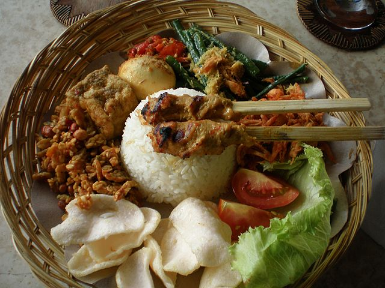
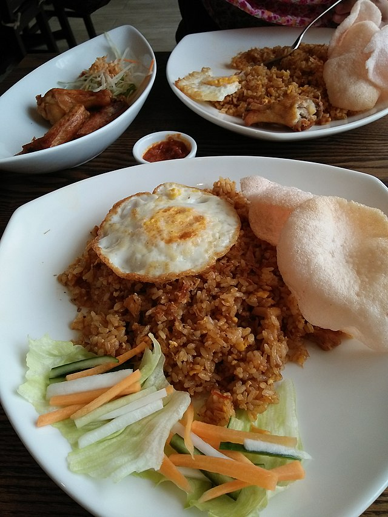
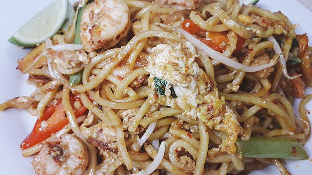
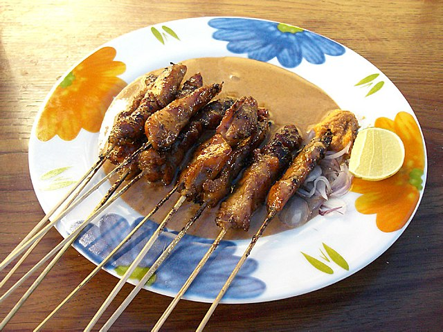
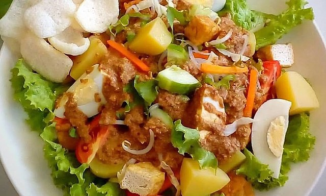
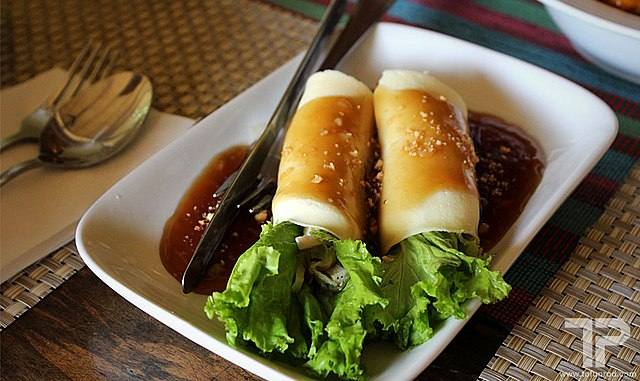
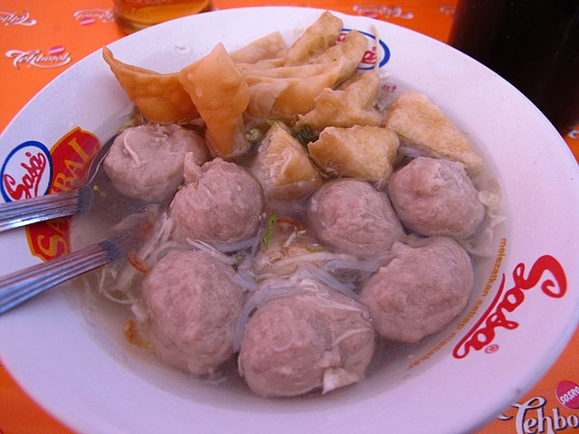
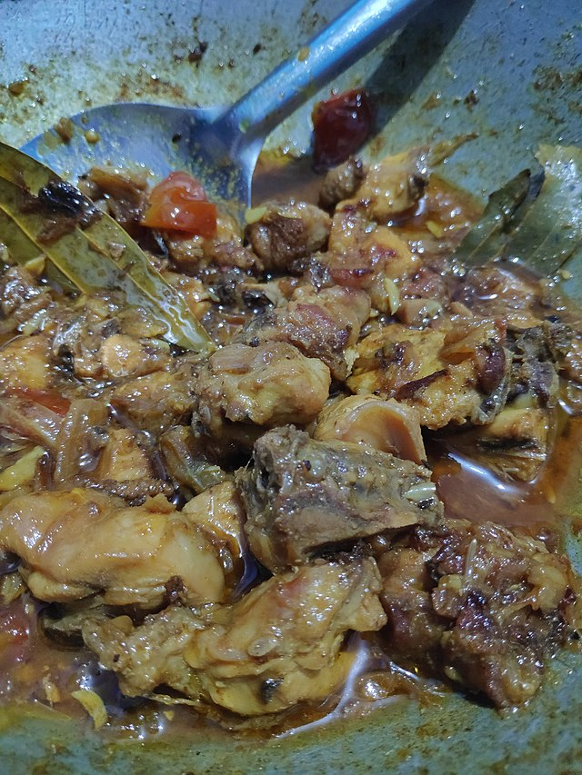
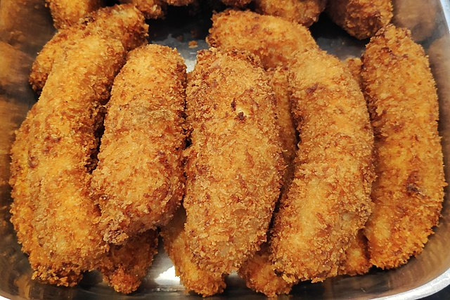

- Nasi campur.
- Nasi goreng.
- Mee goreng.
- Sate (o satay).
- Gado gado.
- Lumpia.
- Bakso.
- Kari ayam.
- Pepes ikan.
- Pisang goreng.










Bali no se caracteriza por tener un turismo epecífico por su gastronomía, pero sí que es cierto que hay una serie de recetas muy populares que comparten su éxito en cualquier rincón del país. Así que vamos a contarte cuales son los 10 platos que hay que comer en esta isla indonesa: